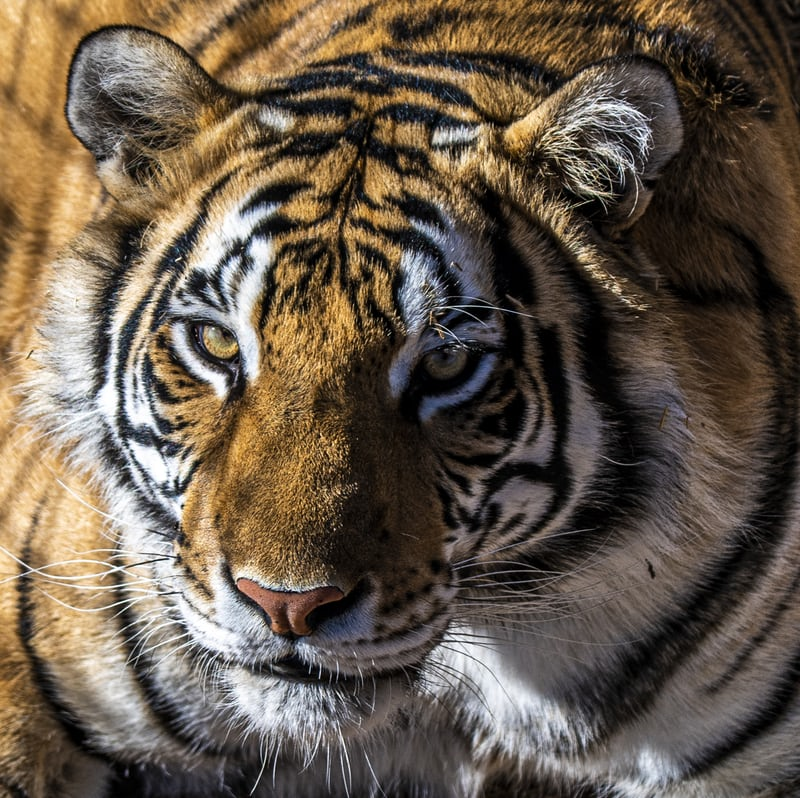

Endangered
An informative guide on endangered animals and how to save them
Rhinoceros

An informative guide on endangered animals and how to save them
Javan rhinos are the most threatened of the five rhino species, with only around 60 individuals that live only in Ujung Kulon National Park in Java, Indonesia. Javan rhinos once lived throughout northeast India and Southeast Asia. Vietnam’s last Javan rhino was poached in 2010. This species is a dusky grey color and has a single horn of up to about 10 inches. Its skin has a number of loose folds, giving the appearance of armor plating. The Javan rhino is very similar in appearance to the closely-related greater one-horned rhinoceros, but has a much smaller head and less apparent skin folds.
International Rhino Foundation works with the Rhino Foundation of Indonesia (Yayasan Badak Indonesia or YABI), and the staff of Ujung Kulon National Park to protect the world’s only population of Javan rhinos while also working to expand the species‘ habitat in Indonesia.